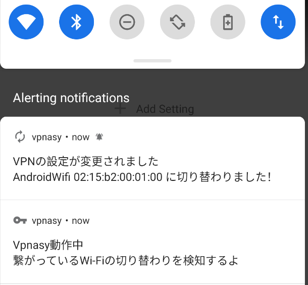

私ごとですが SecHack365 というイベントに参加しVpnasyというアプリを作成しました． （詳細が書いてある ポスター と 2020年の修了生の作品一覧 ）
このアプリは繋がっているWi-Fi（家のWi-Fiなのか，外のFree Wi-Fiなのか等）によって自動で事前に設定した通りにVPNの設定を切り替えてくれるAndroidアプリです． Vpnasyの全体のコードはメンテ中のためまだ公開されていません．公開したら不味いところがないかの確認などを終わらせ次第公開します！
このアプリを作るにあたって接続しているWi-Fi（またはMobile Data）が切り替わったことを自動で認識しVPNを貼り直すという実装を行ったため，その方法をこれから説明します⭐️
因みにWi-Fiの種類はWi-FiのSSIDとBSSIDを使い判断しています⚠️
では早速説明していきます．
今からの説明に書いているコードのうち....と書いている部分はWi-Fiの変化を検知するの実装固有のものでないコードが入ります．
それらのコードを省略している為コードをコピペしただけではダメな場合があります．ご了承ください💦
まずはAndroidアプリ開発においてお馴染みの権限の要求からです！
Wi-FiのSSIDを取得するのに必要な権限はACCESS_NETWORK_STATEとACCESS_FINE_LOCATIONとACCESS_WIFI_STATE です．
これらの権限を要求してきましょう．
AndroidManifest.xmlに以下を追加します．
<uses-permission android:name="android.permission.ACCESS_FINE_LOCATION" />
<uses-permission android:name="android.permission.ACCESS_NETWORK_STATE" />
<uses-permission android:name="android.permission.ACCESS_WIFI_STATE" />
次に任意のActivity等でユーザーに権限をリクエストするダイアログを出すためのコードを書きます．
今回は，権限を1つしかリクエストしないのでRequestPermissionを使います．
⚠️リクエストが拒否されたときの実装の説明はここでは省くため，TODOと書いてます⚠️
....
class PermissionRequestActivity : AppCompatActivity() {
....
private fun requestPermission(){
requestPermissionLauncher.launch(Manifest.permission.ACCESS_FINE_LOCATION)
}
private val requestPermissionLauncher = registerForActivityResult(
ActivityResultContracts.RequestPermission()
) {
if (it) {
// Success.
return@registerForActivityResult
}
// TODO:Request Permission Again.
}
....
}
次は，本題のWi-Fiの変化を検知していきましょう！
ConnectivityManagerを使います．
TransportTypeにTRANSPORT_WIFIとTRANSPORT_CELLULARを設定したRequest（コード上でのnetworkRequest）を生成します． 不必要なTypeは設定しないほうがいいです．
次にregisterNetworkCallbackでnetworkCallbackをセットすることでMobile Dataへの切り替わりも含むWi-Fiの切り替わりが行われる度にnetworkCallbackが呼ばれることになります．
コードは以下のようになります⭐️
val connectivityManager = getSystemService(Context.CONNECTIVITY_SERVICE) as ConnectivityManager
val networkRequest = NetworkRequest.Builder()
.addTransportType(NetworkCapabilities.TRANSPORT_WIFI)
.addTransportType(NetworkCapabilities.TRANSPORT_CELLULAR)
.build()
val networkCallback: ConnectivityManager.NetworkCallback =
object : ConnectivityManager.NetworkCallback() {
override fun onAvailable(network: Network) {
super.onAvailable(network)
val wifiManager: WifiManager = getSystemService(WifiManager::class.java) ?: return
if (wifiManager.isWifiEnabled) {
val ssidText = wifiManager.connectionInfo.ssid.let {
// *${SSID}* になっているから．
it.substring(1, it.length - 1)
}
val bssidText = wifiManager.connectionInfo.bssid
// ここではTimberを使ってログを表示させていますが適宜好きに書き換えてください．
Timber.d("Connected SSID: ${ssidText}, BSSID: ${bssidText}")
} else {
Timber.d("Connected Mobile Data")
}
}
}
// Callbackをセットする
connectivityManager.registerNetworkCallback(networkRequest, networkCallback)
上のコードを検知したい間ずっと生き続けてくれるActivityやらServiceやらに書きます．自分はアプリが別のアプリの下に行っても動いて欲しかったのでForeground Serviceに書きました 🌵
（実機で行うと個人情報が流出するため）エミュレーターで実行した結果
2021-03-xx xx:xx:xx.xxx ..../com.hunachi.vpnasy D/ObserveNetworkStateService$networkCallback: Connected SSID: AndroidWifi, BSSID: 02:15:b2:00:01:00
うまくいってますね🍒
位置情報の認証等で失敗していると，SSIDは<unknown ssid>にBSSIDは02:00:00:00:00:00になります．
ここで証明することはできませんが，他のアプリを起動させていてもアプリが終了されない限り正常にWi-Fiの変化を検知し続けてくれます．
Vpnasyで通知を表示させている時の様子もせっかくなので公開します！

Foreground Servicesを使うために必要な権限はFOREGROUND_SERVICEです．
SDKがAndroid Q以上の場合はForeground Servicesでの位置情報を有効にする必要があるので追加でFOREGROUND_SERVICEが必要になります．
これらの権限を要求してきましょう．
AndroidManifest.xmlに以下を追加します．
<!-- さっきと同じ -->
<uses-permission android:name="android.permission.ACCESS_FINE_LOCATION" />
<uses-permission android:name="android.permission.ACCESS_NETWORK_STATE" />
<uses-permission android:name="android.permission.ACCESS_WIFI_STATE" />
<!-- これ以降を追加する -->
<uses-permission android:name="android.permission.ACCESS_BACKGROUND_LOCATION" />
<!-- SDK VersionがQ以上の端末用 -->
<uses-permission android:name="android.permission.FOREGROUND_SERVICE" />
次に任意のActivity等でユーザーに権限をリクエストするダイアログを出すためのコードを書きます．
複数の権限を要求する際はRequestMultiplePermissionsを使う方法が綺麗でいいと思います．
⚠️リクエストが拒否されたときの実装の説明はここでは省くため，TODOと書いてます⚠️
....
class PermissionRequestActivity : AppCompatActivity() {
....
private fun requestPermission(){
val requiredPermissions = when {
Build.VERSION.SDK_INT >= Build.VERSION_CODES.Q -> arrayOf(
Manifest.permission.ACCESS_FINE_LOCATION,
Manifest.permission.ACCESS_BACKGROUND_LOCATION
)
else -> arrayOf(Manifest.permission.ACCESS_FINE_LOCATION)
}
requestPermissionLauncher.launch(requiredPermissions)
}
private val requestPermissionLauncher = registerForActivityResult(
ActivityResultContracts.RequestMultiplePermissions()
) {
if (Build.VERSION.SDK_INT >= Build.VERSION_CODES.Q && it[Manifest.permission.ACCESS_BACKGROUND_LOCATION] != true) {
// TODO:Request Permission Again.
return@registerForActivityResult
}
if (it[Manifest.permission.ACCESS_FINE_LOCATION] != true) {
// TODO:Request Permission Again.
return@registerForActivityResult
}
// Success.
}
....
}
これで権限周りはバッチリです⭐️
ここまで読んでくださりありがとうございました💞 誰かのお役に立てれば幸いです💞 間違え，改善案等ありましたら Hunachi までDMかリプライよろしくお願いいたします🙇♀️💦
val wifiManager = getSystemService(Context.WIFI_SERVICE) as WifiManagerと書いていた部分を
val wifiManager: WifiManager = getSystemService(WifiManager::class.java) ?: returnに修正しました（getSystemServiceはNullableなのに危ない..）．Twitterで @fkm さん と @Pooh3Mobi さん にアドバイスいただきました．ありがとうございます！！
https://developer.android.com/reference/android/net/wifi/WifiInfo
https://developer.android.com/reference/android/net/ConnectivityManager.NetworkCallback
{kind=link}